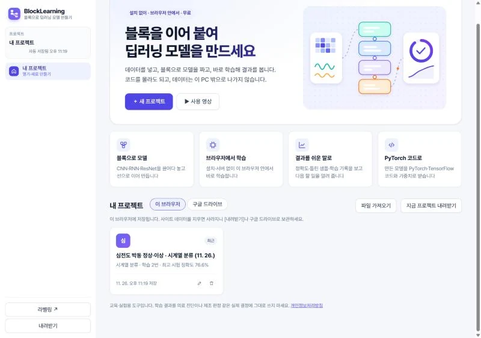
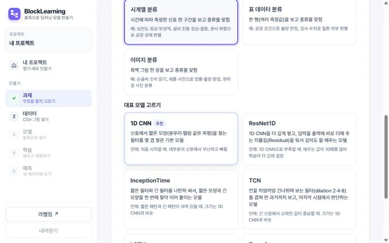
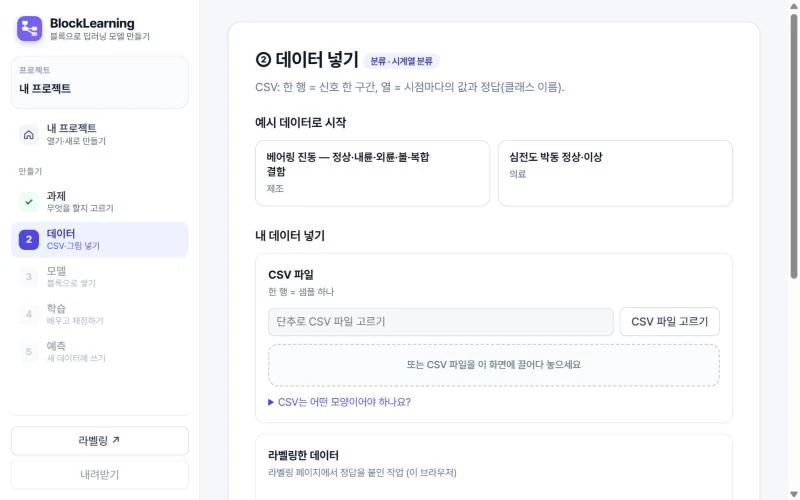
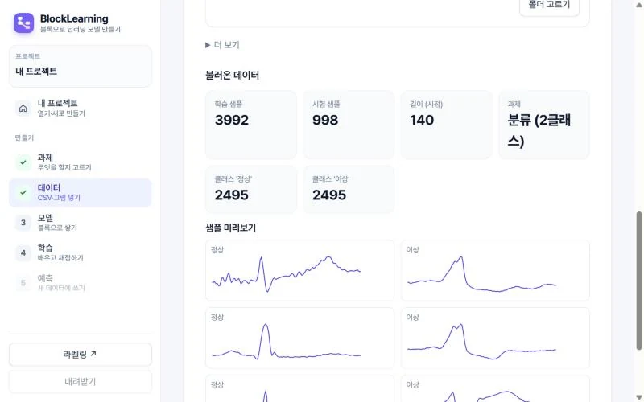
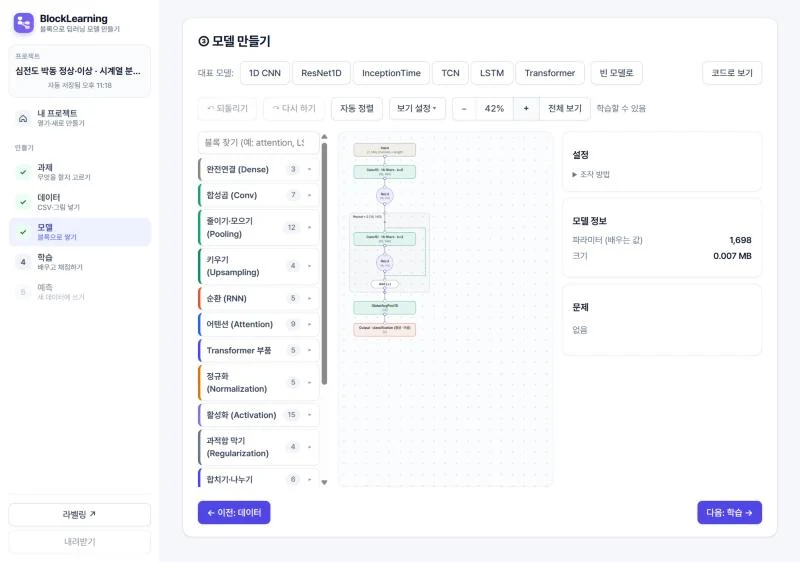
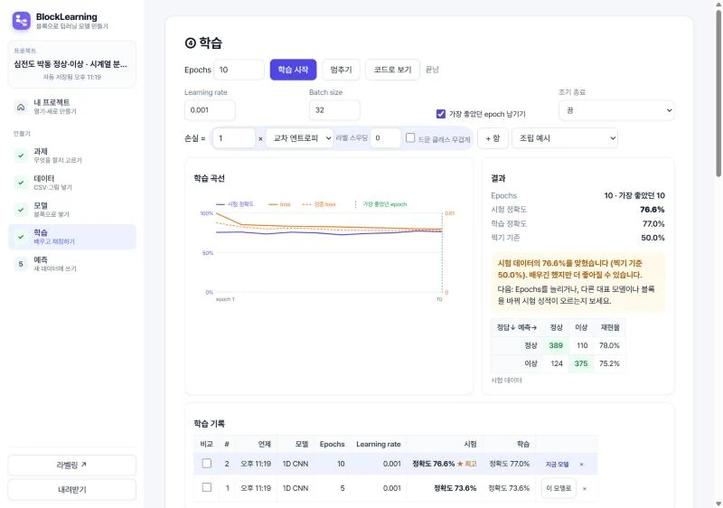
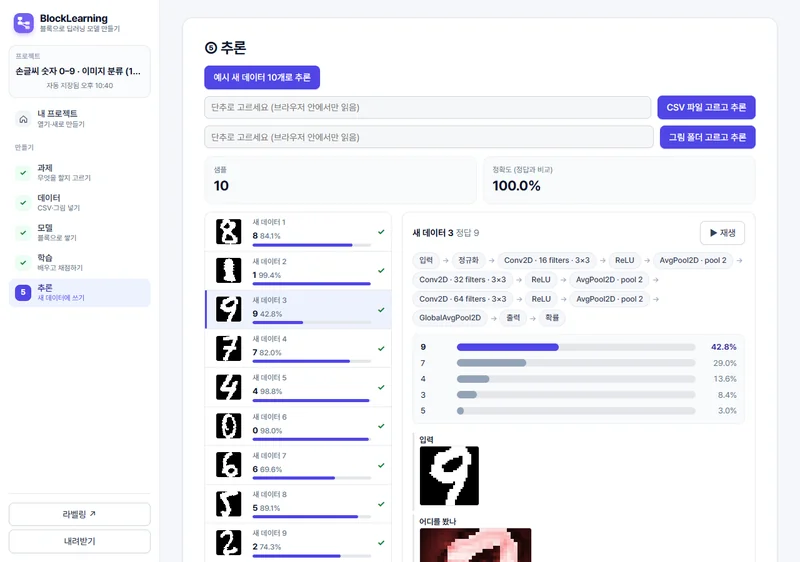

1무엇을 할 수 있나
데이터를 넣고, 블록으로 모델을 짜고, 바로 학습해 결과를 봅니다.
순서는 늘 같습니다: ① 과제 → ② 데이터 → ③ 모델 → ④ 학습 → ⑤ 예측. 학습한 모델은 PyTorch 코드나 파일로 내보내 다른 곳에서 쓸 수 있습니다.
2웹과 설치형 고르기
화면과 쓰는 법은 같습니다. 어디서 계산하느냐가 다릅니다.
| 웹 버전 | 설치형 (내 PC·서버) | |
|---|---|---|
| 시작 | 주소만 열면 끝 | Python과 명령 두 줄 (처음 한 번) |
| 학습 | 브라우저 안에서 (그래픽카드를 WebGL로 빌려 씀) | PyTorch로, NVIDIA GPU가 있으면 GPU로 |
| 잘 맞는 일 | 처음 써 보기, 예시·작은 데이터 | 큰 데이터·큰 모델, 빠른 학습, GPU 서버 |
| 자동 저장 | 이 브라우저 또는 내 구글 드라이브 | 그 컴퓨터의 BlockLearning/projects 폴더 |
| 데이터 | 브라우저 밖으로 나가지 않음 | 그 컴퓨터 밖으로 나가지 않음 |
3웹에서 바로 쓰기
- 주소 열기Chrome이나 Edge 같은 최신 브라우저에서 jeon-stat.github.io/blocklearning 을 엽니다.
- 잠시 기다리기처음 열 때는 계산 프로그램을 받느라 10~20초 걸립니다. 두 번째부터는 빨라집니다.
- 새 프로젝트 누르기첫 화면 ＋ 새 프로젝트를 누르고 사용 순서대로 진행합니다.
4내 PC에 설치하기
처음 한 번만 하면 됩니다. Windows 기준이고, Mac은 같은 명령을 '터미널'에서 실행합니다 (python 대신 python3).
- 명령창 열기
- 주피터(Anaconda)를 쓰고 있다면: 윈도우 키 →
Anaconda Prompt입력 → 엽니다. Python이 이미 들어 있어 2단계로 넘어갑니다. - 아니라면: 윈도우 키 →
powershell입력 → 엽니다.
- 주피터(Anaconda)를 쓰고 있다면: 윈도우 키 →
- Python 확인아래 명령을 붙여 넣고 Enter.
Python 3.10이상이 나오면 됩니다.python --version아무것도 안 나오거나 Microsoft Store가 열리면
Python이 없는 것입니다. python.org/downloads 에서 받은 설치 파일을 실행하고, 첫 화면 아래의 "Add python.exe to PATH"를 꼭 체크한 뒤 Install Now를 누릅니다. 설치가 끝나면 명령창을 닫았다가 새로 열고 다시 확인합니다.
- NVIDIA 그래픽카드가 있으면: GPU용 PyTorch 먼저그래픽카드가 없거나 잘 모르면 건너뛰어도 됩니다 (CPU로 학습). 자세한 것은 GPU로 학습하기.
pip install torch --index-url https://download.pytorch.org/whl/cu126 - BlockLearning 설치PyTorch까지 받느라 몇 분 걸릴 수 있습니다.
pip install blocklearning - 실행브라우저가 저절로 열리고 첫 화면 '내 프로젝트'가 나옵니다.
쓰는 동안 명령창은 닫지 마세요. 끝낼 때는 명령창에서 Ctrl+C.python -m blocklearning
python -m blocklearning 한 줄만 실행하면 됩니다. 새 버전으로 올릴 때는 pip install -U blocklearning (만든 프로젝트는 그대로 남습니다).주피터 노트북 셀에서 실행하고 싶다면
첫 셀에서 설치하고,
%pip install -U blocklearning다음 셀에서 실행하면 브라우저 새 탭에 열립니다. 쓰는 동안 셀은 계속 실행 중([*])으로 남고, 끝낼 때는 주피터의 ■(중지) 버튼을 누릅니다.
import sys
!{sys.executable} -m blocklearning주소의 token(접속 열쇠)은 무엇인가요?
실행할 때마다 새로 만들어지는 열쇠라, 따로 할 일은 없습니다. 브라우저가 열쇠가 든 주소(http://127.0.0.1:8765/?token=…)로 열리면 그 브라우저만 들어올 수 있습니다. 이 주소를 남에게 보여 주지 마세요. 다시 실행하면 열쇠가 바뀌니 명령창에 새로 나온 주소로 엽니다.
5GPU로 학습하기
설치형은 NVIDIA 그래픽카드가 있으면 GPU로 학습합니다. 그러려면 GPU용 PyTorch가 깔려 있어야 합니다.
내 PC에 쓸 수 있는 GPU가 있나
nvidia-smi그래픽카드 이름이 표로 나오면 NVIDIA GPU가 있는 것입니다. '인식할 수 없는 명령'이 나오면 NVIDIA 그래픽카드가 아니거나 드라이버가 없는 것으로, 이때는 CPU로 학습합니다 (AMD·Intel 내장 그래픽, Mac도 CPU).
PyTorch가 GPU를 쓰는지 확인
python -c "import torch; print(torch.__version__, torch.cuda.is_available())"끝이 True면 준비된 것입니다. +cpu False처럼 나오면 CPU용 PyTorch가 깔린 것입니다. Windows에서 pip install blocklearning만 하면 이렇게 됩니다.
CPU용을 GPU용으로 바꾸기
BlockLearning을 끄고 (Ctrl+C) 아래 두 줄을 차례로 실행한 뒤, 위 확인 명령을 다시 실행합니다. 2~3GB라 몇 분 걸립니다.
pip uninstall -y torchpip install torch --index-url https://download.pytorch.org/whl/cu126그래도 False면 NVIDIA 드라이버를 업데이트하거나, pytorch.org에서 내 PC에 맞는 명령을 고르세요.
학습 화면에서 장치 고르기
④ 학습의 장치 칸에서 고릅니다.
- 자동 (처음 값): GPU가 있으면 GPU, 없으면 CPU. GPU가 여럿이면 학습을 시작할 때 가장 덜 쓰는 GPU를 고릅니다.
- CPU: GPU가 있어도 CPU로만.
- GPU / GPU 0, GPU 1, …: GPU가 여럿이면 번호마다 지금 쓰이는 메모리가 함께 보여, 남이 쓰는 GPU를 피해 고를 수 있습니다.
웹 버전에는 이 칸이 없습니다. 브라우저가 그래픽카드를 알아서 씁니다.
6GPU 서버에서 쓰기
주피터를 서버에서 쓰는 것과 같은 방식입니다. 서버에 들어가 실행하면, 화면은 내 PC 브라우저에서 보고 계산은 서버 GPU가 합니다.
- 서버에 접속평소처럼 내 PC 명령창에서 SSH로 접속합니다.
ssh 사용자@서버주소 - 설치 (처음 한 번)서버에 GPU용 PyTorch가 이미 있으면 그대로 씁니다.
pip install -U blocklearning - 서버에서 실행서버에는 브라우저가 없어서, 대신 명령창에 내 PC에서 할 일이 나옵니다.
python -m blocklearning - 내 PC에서 포트 잇기내 PC에서 명령창을 하나 더 열고, 안내에 나온 명령을 그대로 실행합니다. 쓰는 동안 이 창은 켜 둡니다.
ssh -L 8765:127.0.0.1:8765 사용자@서버주소 - 내 PC 브라우저로 열기안내에 나온 주소
http://127.0.0.1:8765/?token=…를 내 PC 브라우저에 붙여 넣습니다.
알아 둘 것
- 접속이 끊겨도 계속 돌게: 서버에서
tmux new -s bl안에서 실행하고 Ctrl+B, D로 빠져나옵니다. 다시 볼 때는tmux attach -t bl. - 데이터: 화면의 파일 고르기·폴더 고르기로 내 PC 파일을 고르면 서버로 올라갑니다. 서버에 이미 있는 데이터는 경로를 넣으면 됩니다.
- 저장: 프로젝트는 서버의
~/BlockLearning/projects에 저장되고, 첫 화면의 지금 프로젝트 내려받기로 내 PC에 받을 수 있습니다. 내보낸 모델·코드도 브라우저로 함께 내려받아집니다. - 여럿이 같은 서버를 쓸 때: 각자 자기 계정으로 실행하면 접속 열쇠가 따로라 서로의 화면에 들어갈 수 없습니다. 포트가 이미 쓰이고 있으면 다음 번호(8766, …)를 쓰고, 안내도 그 번호로 나옵니다.
- GPU 예약은 없습니다: 두 사람이 같은 GPU를 고르면 함께 쓰게 됩니다. '장치' 칸의 메모리 표시를 보고 비어 있는 GPU를 고르세요.
7사용 순서
웹과 설치형 모두 같습니다. 왼쪽 단계 줄을 눌러 언제든 앞뒤로 오갈 수 있습니다.
첫 화면: 내 프로젝트

- ＋ 새 프로젝트로 시작합니다. 데이터와 모델이 생기면 저절로 저장되고 카드가 생깁니다.
- 카드를 한 번 누르면 고르고, 한 번 더 누르면 엽니다. 연필·휴지통 단추로 이름 바꾸기·지우기.
- 파일 가져오기: 다른 PC나 웹에서 받은
.blocklearning파일을 엽니다. - ▶ 사용 영상: 처음부터 끝까지 한 번 해 보는 짧은 영상.
① 과제: 무엇을 할지 고르기

- 분류·회귀·이상 탐지 같은 큰 틀을 고르고, 데이터 종류(시계열·표·이미지)를 고르면 대표 모델이 나옵니다. 모델마다 언제 쓰면 좋은지 적혀 있고, 추천 표시가 무난한 첫 선택입니다.
- 잘 모르겠으면 과제는 나중에 — 데이터부터 넣기를 누르세요. 데이터를 보고 알맞은 과제와 모델을 골라 줍니다.
② 데이터 넣기

- 예시 데이터로 시작: 누르기만 하면 됩니다. 모두 공개된 실제 데이터(베어링 진동, 심전도, 강판, X-ray 등)입니다.
- CSV 파일: CSV 파일 고르기로 고르거나 화면에 끌어다 놓습니다. 한 행이 샘플 하나, 마지막 열이 정답입니다.
고르면 열마다 역할(입력·정답·안 씀)을 짐작해 보여 주고, 열 이름을 눌러 바꾼 뒤 불러오기를 누릅니다.t1, t2, t3, …, t140, 정답 0.12, 0.15, 0.11, …, 0.09, 정상 0.31, 0.29, 0.40, …, 0.22, 이상 - 시계열 폴더: 샘플(사이클·환자)마다 CSV가 하나씩 있는 폴더. 정답은 클래스별 하위 폴더나
파일이름,정답표로 줍니다. - 이미지 폴더: 클래스별 하위 폴더에 그림을 나눠 담은 폴더 (흑백으로 맞춰 씀).

문제가 있으면 몇 번째 행·열이 왜 안 되는지 쉬운 말로 알려 줍니다.
③ 모델 만들기

- 대표 모델 단추(1D CNN, ResNet1D, LSTM, Transformer 등)를 누르면 바로 쓸 수 있는 모델이 채워집니다. 처음에는 이대로 학습해 보세요.
- 블록 넣기: 왼쪽 목록에서 블록을 끌어 선 위에 놓으면 그 자리에 끼워집니다. 위 칸에서 이름으로 찾을 수 있습니다.
- 선 잇기: 상자 아래 동그라미를 끌어 다른 상자에 놓으면 갈래·합치기(잔차 연결 등)를 만들 수 있습니다.
- 설정: 상자를 누르면 오른쪽 '설정'에서 필터 수·크기 등을 바꿉니다. 블록마다 지나는 데이터 모양과 파라미터 수가 보입니다.
- 문제 표시: 맞지 않는 조립은 상자가 빨갛게 되고, 오른쪽 '문제'에 이유와 고칠 방법이 나옵니다.
- 코드로 보기: 지금 모델을 PyTorch·TensorFlow 코드로 봅니다. 되돌리기·다시 하기·자동 정렬도 위에 있습니다.
④ 학습

- Epochs(데이터를 몇 번 돌려 볼지), Learning rate, Batch size를 정하고 학습 시작. 처음 값 그대로도 괜찮습니다. 설치형은 여기서 장치를 고릅니다.
- 학습하는 동안 곡선이 그려지고, 멈추기로 거기까지 학습한 결과를 남길 수 있습니다.
- 결과 읽기: 처음 보는 시험 데이터에서의 성적(정확도·R² 등)을 '찍기 기준'과 비교해 쉬운 말로 알려 주고, 다음에 해 볼 일을 제안합니다. 혼동 행렬 칸을 누르면 그 칸의 샘플(틀린 것 등)을 봅니다.
- 학습 기록: 학습할 때마다 모델·설정·성적이 남습니다 (★ 최고 표시). 이 모델로를 누르면 그때 모델로 돌아가고, 바로 저장됩니다. 두 줄의 '비교'를 체크하면 무엇이 달랐는지 나란히 봅니다.
- 더 보기에는 가장 좋았던 epoch 남기기, 조기 종료, 손실 함수 조립이 있습니다.
⑤ 새 데이터로 예측

- 예시 데이터면 예시 새 데이터 10개로 예측으로 학습에 쓰지 않은 데이터를 바로 예측하고 정답과 비교합니다.
- 내 데이터는 학습 때와 같은 모양의 CSV(정답 열은 없어도 됨)·폴더를 고릅니다. 같은 정규화를 해서 예측하고, 정답이 있으면 맞았는지 표시합니다.
- 결과 CSV 내려받기로 예측 결과를 받습니다.
8저장과 내보내기
자동 저장
따로 저장 단추를 누르지 않아도, 데이터·모델·학습 결과가 바뀌면 1~2초 뒤 저절로 저장됩니다. 왼쪽 위 프로젝트 이름 아래의 '자동 저장됨 (시각)'으로 확인합니다.
- 웹: 이 브라우저 안, 또는 구글 드라이브(내 드라이브/BlockLearning/프로젝트 이름).
- 설치형: 실행한 컴퓨터의
BlockLearning/projects폴더 (Windows는C:\Users\사용자이름\BlockLearning\projects). 저장 폴더는 첫 화면에도 나옵니다.
프로젝트 파일 옮기기
첫 화면의 지금 프로젝트 내려받기로 .blocklearning 파일을 받고, 다른 PC의 BlockLearning에서 파일 가져오기로 엽니다. 학습 기록까지 그대로 옮겨집니다.
- 웹 버전: 내 데이터 사본까지 파일 안에 들어 있어, 다른 PC의 웹 버전에서 그대로 열립니다.
- 설치형: 데이터는 파일 위치(경로)로만 기억합니다. 다른 컴퓨터에서 열려면 같은 데이터가 같은 위치에 있어야 합니다 (예시 데이터는 상관없음).
학습한 모델 내보내기
- 코드로: 코드로 보기 → 파일로 저장 (.py). PyTorch 코드와 학습한 가중치(
_weights.npz)를 받아 같은 폴더에 두면, 파이썬에서 학습한 모델 그대로 불러 씁니다. - 모델 파일로 (설치형): 학습한 모델 내보내기 (.pt). BlockLearning 없이 PyTorch만 있으면
torch.jit.load로 읽어 예측합니다.
9라벨링
정답이 없는 데이터에 정답을 붙이는 곳입니다. 원래 데이터 파일은 바꾸지 않습니다.
- 라벨링 열기왼쪽 아래 라벨링 ↗을 누르면 새 탭에 열립니다.
- 데이터 고르고 정답 붙이기시계열 폴더·이미지 폴더·CSV를 고르고, 하나씩 보면서 클래스·숫자·구간·도형(상자·다각형 등)을 붙입니다. 숫자 키 1–9로 클래스, Enter로 확인, ←/→로 이동.
- 학습에 쓰기학습 데이터로 쓰기를 누르거나, ② 데이터의 라벨링한 데이터에서 골라 불러옵니다.
정답을 10개쯤 붙이면 딥러닝 제안으로 나머지에 정답을 미리 채워 줘서, 확인만 하며 빠르게 붙일 수 있습니다.
10문제 해결
'python'(또는 'pip')을 찾을 수 없다고 나와요
Python을 설치할 때 "Add python.exe to PATH"를 체크하지 않은 경우입니다. 설치 파일을 다시 실행해 Modify에서 체크하거나, python 대신 py를 써 보세요 (py -m pip install blocklearning, py -m blocklearning). Anaconda가 있다면 Anaconda Prompt에서 실행하면 됩니다.
GPU가 있는데 '자동 (CPU, GPU 없음)'으로 나와요
대부분 CPU용 PyTorch가 깔린 경우입니다. GPU로 학습하기의 'CPU용을 GPU용으로 바꾸기'를 따라 하세요.
'접속 열쇠가 필요합니다' 화면이 나와요
열쇠 없는 주소로 열었거나, BlockLearning을 다시 실행해 열쇠가 바뀐 경우입니다. 명령창에 마지막으로 나온 …/?token=… 주소로 다시 여세요.
실행 파일이 회사 보안 정책으로 막혀요
blocklearning 대신 python -m blocklearning으로 실행하세요. 이 설명서의 명령은 모두 이 방식입니다.
첫 화면 '내 프로젝트'가 안 보여요 (설치형)
예전 버전일 수 있습니다. pip show blocklearning으로 버전을 보고, 0.1.2보다 낮으면 BlockLearning을 끄고 pip install -U blocklearning 후 다시 실행하세요.
웹 버전이 처음에 오래 걸려요
처음 한 번은 계산 프로그램(Pyodide·TensorFlow.js)을 받느라 10~20초 걸립니다. 그다음부터는 받아 둔 것을 써서 빨라집니다.
학습이 느려요
Epochs를 줄이거나 더 작은 대표 모델(1D CNN 등)로 먼저 해 보세요. 데이터가 크다면 설치형에서 GPU로 학습하는 것이 가장 빠릅니다.
내 데이터가 어딘가로 올라가나요?
아니요. 웹 버전은 브라우저 안에서, 설치형은 실행한 컴퓨터 안에서만 계산합니다. 구글 드라이브 저장을 직접 고른 경우에만 내 드라이브에 저장됩니다.
그 밖의 문제는 GitHub Issues에 남겨 주세요.